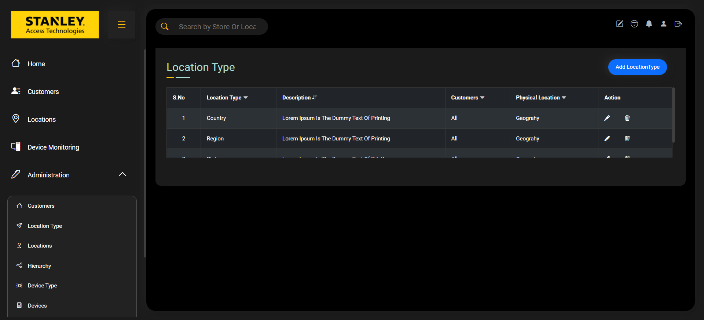
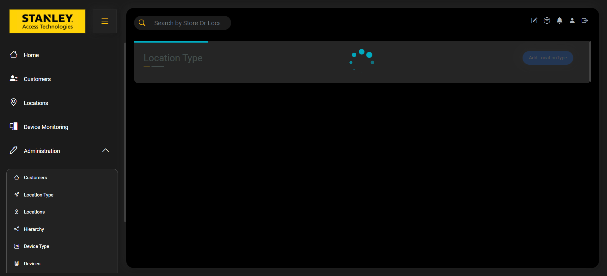
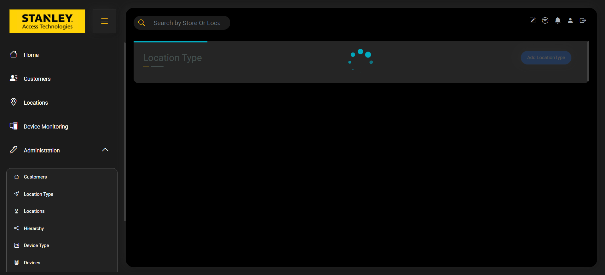
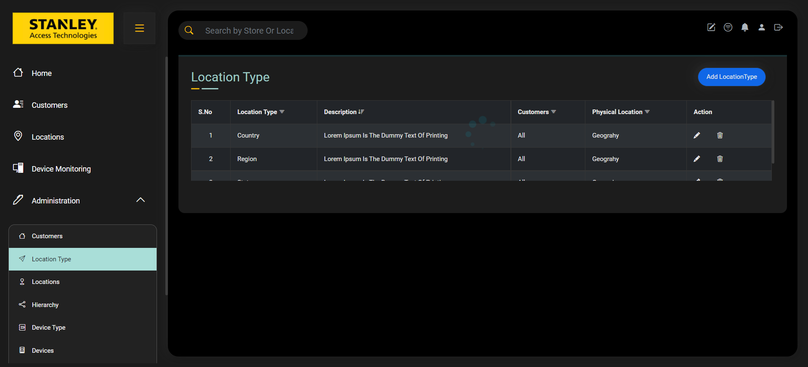
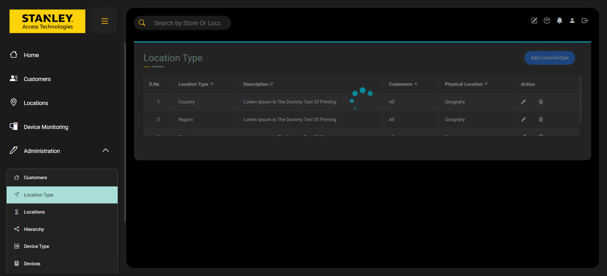
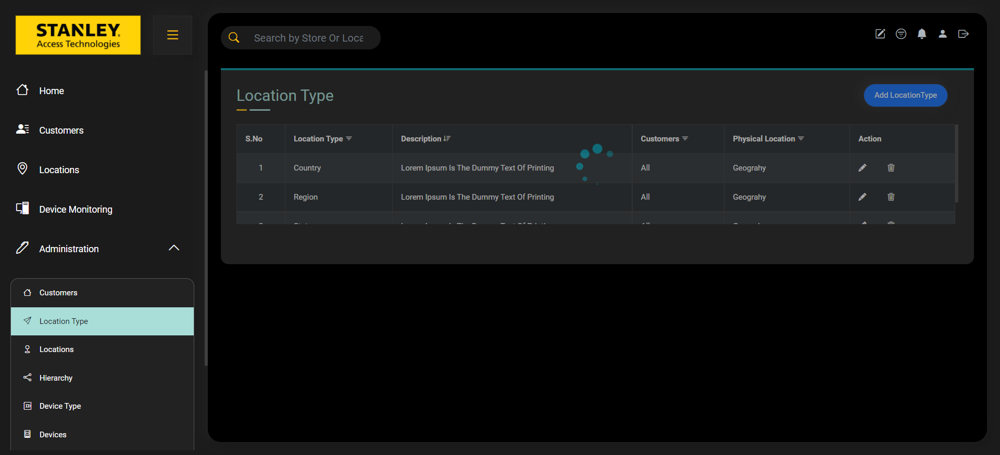
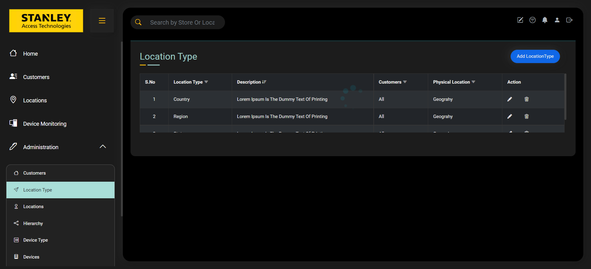
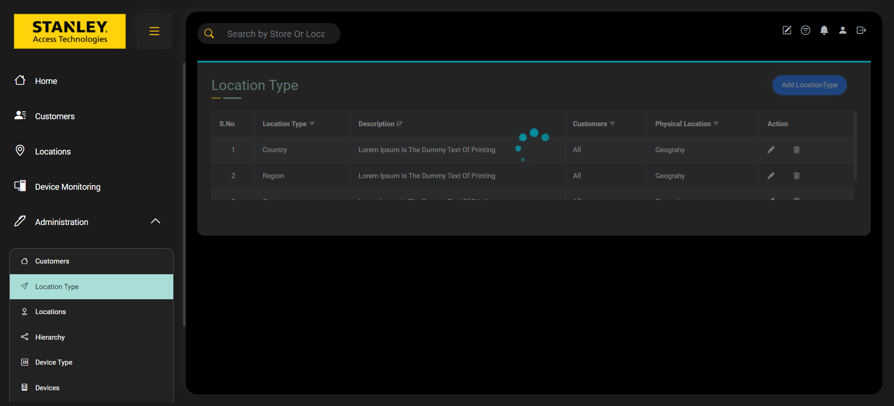
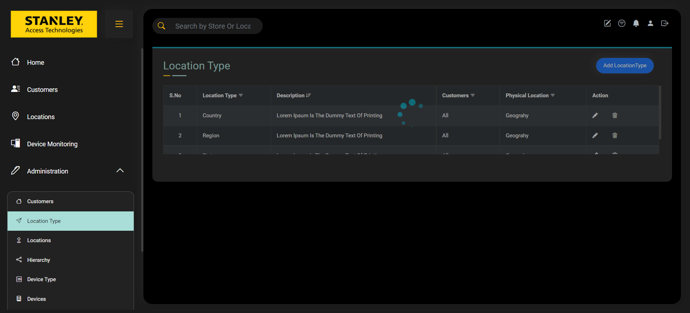

Started
Dec 12, 2022 04:42:38 PM
Ended
Dec 12, 2022 04:52:04 PM
Features Passed
2
Features Failed
1
Features
Scenarios
Steps
Timeline
-
Validate Add Location Type feature
16:42:39 PM / 00:08:22:614 Fail
Validate Add Location Type feature
12.12.2022 16:42:39 12.12.2022 16:51:02 00:08:22:614 · #test-id=1FailValidate Add Location Type featureFailValidate Add Location Type featureGiven User is on the Location Type PageWhen User Click on Add Location Type buttonAnd User Enters "Testing East" "Testing Purpose" "Building " "Walmart"Step skippedAnd Click on Submit button "Location Type Added Successfully"Step skippedapphooks.ApplicationHooks.tearDown(io.cucumber.java.Scenario)Validate_Add_Location_Type_featureFailValidate Add Location Type featureGiven User is on the Location Type PageWhen User Click on Add Location Type buttonAnd User Enters "Testing 11" "State" "Building " "All"Step skippedAnd Click on Submit button "Location Type Added Successfully"Step skippedapphooks.ApplicationHooks.tearDown(io.cucumber.java.Scenario)Validate_Add_Location_Type_featureFailValidate Add Location Type featureGiven User is on the Location Type PageWhen User Click on Add Location Type buttonAnd User Enters "Test@12345" "State Division" "Geography" "Walmart"Step skippedAnd Click on Submit button "Location Type Added Successfully"Step skippedapphooks.ApplicationHooks.tearDown(io.cucumber.java.Scenario)Validate_Add_Location_Type_featureFailValidate Add Location Type featureGiven User is on the Location Type PageWhen User Click on Add Location Type buttonAnd User Enters "Testing abc" "State" "Building " "Home Depot"Step skippedAnd Click on Submit button "Location Type Added Successfully"Step skippedapphooks.ApplicationHooks.tearDown(io.cucumber.java.Scenario)Validate_Add_Location_Type_feature FailValidate Add Location Type featureGiven User is on the Location Type PageWhen User Click on Add Location Type buttonAnd User Enters "Testing 985" "Region" "Device Location" "Home Depot"Step skippedAnd Click on Submit button "Location Type Added Successfully"Step skippedapphooks.ApplicationHooks.tearDown(io.cucumber.java.Scenario)Validate_Add_Location_Type_featureFailValidate Add Location Type featureGiven User is on the Location Type PageWhen User Click on Add Location Type buttonAnd User Enters "Testing 25" "Location Type Profile" "Geography" "Home Depot"Step skippedAnd Click on Submit button "Location Type Added Successfully"Step skippedapphooks.ApplicationHooks.tearDown(io.cucumber.java.Scenario)Validate_Add_Location_Type_featureFailValidate Add Location Type featureGiven User is on the Location Type PageWhen User Click on Add Location Type buttonAnd User Enters "Testing 287" "Location Type Profile" "Device Location" "Home Depot"Step skippedAnd Click on Submit button "Location Type Added Successfully"Step skippedapphooks.ApplicationHooks.tearDown(io.cucumber.java.Scenario)Validate_Add_Location_Type_featureFailValidate Add Location Type featureGiven User is on the Location Type PageWhen User Click on Add Location Type buttonAnd User Enters "Testing 548" "Testing Purpose" "Geography" "Home Depot"Step skippedAnd Click on Submit button "Location Type Added Successfully"Step skippedapphooks.ApplicationHooks.tearDown(io.cucumber.java.Scenario)Validate_Add_Location_Type_feature
FailValidate Add Location Type featureGiven User is on the Location Type PageWhen User Click on Add Location Type buttonAnd User Enters "Testing 985" "Region" "Device Location" "Home Depot"Step skippedAnd Click on Submit button "Location Type Added Successfully"Step skippedapphooks.ApplicationHooks.tearDown(io.cucumber.java.Scenario)Validate_Add_Location_Type_featureFailValidate Add Location Type featureGiven User is on the Location Type PageWhen User Click on Add Location Type buttonAnd User Enters "Testing 25" "Location Type Profile" "Geography" "Home Depot"Step skippedAnd Click on Submit button "Location Type Added Successfully"Step skippedapphooks.ApplicationHooks.tearDown(io.cucumber.java.Scenario)Validate_Add_Location_Type_featureFailValidate Add Location Type featureGiven User is on the Location Type PageWhen User Click on Add Location Type buttonAnd User Enters "Testing 287" "Location Type Profile" "Device Location" "Home Depot"Step skippedAnd Click on Submit button "Location Type Added Successfully"Step skippedapphooks.ApplicationHooks.tearDown(io.cucumber.java.Scenario)Validate_Add_Location_Type_featureFailValidate Add Location Type featureGiven User is on the Location Type PageWhen User Click on Add Location Type buttonAnd User Enters "Testing 548" "Testing Purpose" "Geography" "Home Depot"Step skippedAnd Click on Submit button "Location Type Added Successfully"Step skippedapphooks.ApplicationHooks.tearDown(io.cucumber.java.Scenario)Validate_Add_Location_Type_feature FailValidate Add Location Type featureGiven User is on the Location Type PageWhen User Click on Add Location Type buttonAnd User Enters "Testing 2" "State" "Building " "Home Depot"Step skippedAnd Click on Submit button "Location Type Added Successfully"Step skippedapphooks.ApplicationHooks.tearDown(io.cucumber.java.Scenario)Validate_Add_Location_Type_feature
FailValidate Add Location Type featureGiven User is on the Location Type PageWhen User Click on Add Location Type buttonAnd User Enters "Testing 2" "State" "Building " "Home Depot"Step skippedAnd Click on Submit button "Location Type Added Successfully"Step skippedapphooks.ApplicationHooks.tearDown(io.cucumber.java.Scenario)Validate_Add_Location_Type_feature FailValidate Add Location Type featureGiven User is on the Location Type PageWhen User Click on Add Location Type buttonAnd User Enters "Test Demo" "State" "Geography" "All"Step skippedAnd Click on Submit button "Duplicate Value Entered"Step skippedapphooks.ApplicationHooks.tearDown(io.cucumber.java.Scenario)Validate_Add_Location_Type_featureFailValidate Add Location Type featureGiven User is on the Location Type PageWhen User Click on Add Location Type buttonAnd User Enters "Test Demo1" "Region" "Device Location" "Home Depot"Step skippedAnd Click on Submit button "Duplicate Value Entered"Step skippedapphooks.ApplicationHooks.tearDown(io.cucumber.java.Scenario)Validate_Add_Location_Type_featureFailValidate Add Location Type featureGiven User is on the Location Type PageWhen User Click on Add Location Type buttonAnd User Enters "Test 1" "State" "Building " "Home Depot"Step skippedAnd Click on Submit button "Duplicate Value Entered"Step skippedapphooks.ApplicationHooks.tearDown(io.cucumber.java.Scenario)Validate_Add_Location_Type_featureFailValidate Add Location Type featureGiven User is on the Location Type PageWhen User Click on Add Location Type buttonAnd User Enters "Test 45" "Testing Purpose" "Device Location" "Home Depot"Step skippedAnd Click on Submit button "Duplicate Value Entered"Step skippedapphooks.ApplicationHooks.tearDown(io.cucumber.java.Scenario)Validate_Add_Location_Type_featureFailValidate Add Location Type featureGiven User is on the Location Type PageWhen User Click on Add Location Type buttonAnd User Enters "Testing" " " "Building " "Home Depot"Step skippedAnd Click on Submit button "Duplicate Value Entered"Step skippedapphooks.ApplicationHooks.tearDown(io.cucumber.java.Scenario)Validate_Add_Location_Type_featureFailValidate Add Location Type featureGiven User is on the Location Type PageWhen User Click on Add Location Type buttonAnd User Enters " " " " "Building " "Home Depot"Step skippedAnd Click on Submit button "Duplicate Value Entered"Step skippedapphooks.ApplicationHooks.tearDown(io.cucumber.java.Scenario)Validate_Add_Location_Type_feature
FailValidate Add Location Type featureGiven User is on the Location Type PageWhen User Click on Add Location Type buttonAnd User Enters "Test Demo" "State" "Geography" "All"Step skippedAnd Click on Submit button "Duplicate Value Entered"Step skippedapphooks.ApplicationHooks.tearDown(io.cucumber.java.Scenario)Validate_Add_Location_Type_featureFailValidate Add Location Type featureGiven User is on the Location Type PageWhen User Click on Add Location Type buttonAnd User Enters "Test Demo1" "Region" "Device Location" "Home Depot"Step skippedAnd Click on Submit button "Duplicate Value Entered"Step skippedapphooks.ApplicationHooks.tearDown(io.cucumber.java.Scenario)Validate_Add_Location_Type_featureFailValidate Add Location Type featureGiven User is on the Location Type PageWhen User Click on Add Location Type buttonAnd User Enters "Test 1" "State" "Building " "Home Depot"Step skippedAnd Click on Submit button "Duplicate Value Entered"Step skippedapphooks.ApplicationHooks.tearDown(io.cucumber.java.Scenario)Validate_Add_Location_Type_featureFailValidate Add Location Type featureGiven User is on the Location Type PageWhen User Click on Add Location Type buttonAnd User Enters "Test 45" "Testing Purpose" "Device Location" "Home Depot"Step skippedAnd Click on Submit button "Duplicate Value Entered"Step skippedapphooks.ApplicationHooks.tearDown(io.cucumber.java.Scenario)Validate_Add_Location_Type_featureFailValidate Add Location Type featureGiven User is on the Location Type PageWhen User Click on Add Location Type buttonAnd User Enters "Testing" " " "Building " "Home Depot"Step skippedAnd Click on Submit button "Duplicate Value Entered"Step skippedapphooks.ApplicationHooks.tearDown(io.cucumber.java.Scenario)Validate_Add_Location_Type_featureFailValidate Add Location Type featureGiven User is on the Location Type PageWhen User Click on Add Location Type buttonAnd User Enters " " " " "Building " "Home Depot"Step skippedAnd Click on Submit button "Duplicate Value Entered"Step skippedapphooks.ApplicationHooks.tearDown(io.cucumber.java.Scenario)Validate_Add_Location_Type_feature FailValidate Add Location Type featureGiven User is on the Location Type PageWhen User Click on Add Location Type buttonAnd User Enters " " "Testing" "Building " "Home Depot"Step skippedAnd Click on Submit button "Duplicate Value Entered"Step skippedapphooks.ApplicationHooks.tearDown(io.cucumber.java.Scenario)Validate_Add_Location_Type_featureFailValidate Add Location Type featureGiven User is on the Location Type PageWhen User Click on Add Location Type buttonAnd User Enters "" "State" "Building " "Home Depot"Step skippedAnd Click on Submit button "Submit Button is Disabled. Need to fill Mandatory fields"Step skippedapphooks.ApplicationHooks.tearDown(io.cucumber.java.Scenario)Validate_Add_Location_Type_featureFailValidate Add Location Type featureGiven User is on the Location Type PageWhen User Click on Add Location Type buttonAnd User Enters "Testing" "" "Building " "Home Depot"Step skippedAnd Click on Submit button "Submit Button is Disabled. Need to fill Mandatory fields"Step skippedapphooks.ApplicationHooks.tearDown(io.cucumber.java.Scenario)Validate_Add_Location_Type_featureFailValidate Add Location Type featureGiven User is on the Location Type PageWhen User Click on Add Location Type buttonAnd User Enters "Testing" "State" "" "Home Depot"Step skippedAnd Click on Submit button "Submit Button is Disabled. Need to fill Mandatory fields"Step skippedapphooks.ApplicationHooks.tearDown(io.cucumber.java.Scenario)Validate_Add_Location_Type_featureFailValidate Add Location Type featureGiven User is on the Location Type PageWhen User Click on Add Location Type buttonAnd User Enters "Testing" "State" "Building " ""Step skippedAnd Click on Submit button "Submit Button is Disabled. Need to fill Mandatory fields"Step skippedapphooks.ApplicationHooks.tearDown(io.cucumber.java.Scenario)Validate_Add_Location_Type_featureFailValidate Add Location Type featureGiven User is on the Location Type PageWhen User Click on Add Location Type buttonAnd User Enters "" "" "Building " "Home Depot"Step skippedAnd Click on Submit button "Submit Button is Disabled. Need to fill Mandatory fields"Step skippedapphooks.ApplicationHooks.tearDown(io.cucumber.java.Scenario)Validate_Add_Location_Type_featureFailValidate Add Location Type featureGiven User is on the Location Type PageWhen User Click on Add Location Type buttonAnd User Enters "Testing" "" "" "Home Depot"Step skippedAnd Click on Submit button "Submit Button is Disabled. Need to fill Mandatory fields"Step skippedapphooks.ApplicationHooks.tearDown(io.cucumber.java.Scenario)Validate_Add_Location_Type_featureFailValidate Add Location Type featureGiven User is on the Location Type PageWhen User Click on Add Location Type buttonAnd User Enters "Testing" "State" "" ""Step skippedAnd Click on Submit button "Submit Button is Disabled. Need to fill Mandatory fields"Step skippedapphooks.ApplicationHooks.tearDown(io.cucumber.java.Scenario)Validate_Add_Location_Type_featureFailValidate Add Location Type featureGiven User is on the Location Type PageWhen User Click on Add Location Type buttonAnd User Enters "" "State" "Building " ""Step skippedAnd Click on Submit button "Submit Button is Disabled. Need to fill Mandatory fields"Step skippedapphooks.ApplicationHooks.tearDown(io.cucumber.java.Scenario)Validate_Add_Location_Type_featureFailValidate Add Location Type featureGiven User is on the Location Type PageWhen User Click on Add Location Type buttonAnd User Enters "" "" "" "Home Depot"Step skippedAnd Click on Submit button "Submit Button is Disabled. Need to fill Mandatory fields"Step skippedapphooks.ApplicationHooks.tearDown(io.cucumber.java.Scenario)Validate_Add_Location_Type_featureFailValidate Add Location Type featureGiven User is on the Location Type PageWhen User Click on Add Location Type buttonAnd User Enters "Testing" "" "" ""Step skippedAnd Click on Submit button "Submit Button is Disabled. Need to fill Mandatory fields"Step skippedapphooks.ApplicationHooks.tearDown(io.cucumber.java.Scenario)Validate_Add_Location_Type_featureFailValidate Add Location Type featureGiven User is on the Location Type PageWhen User Click on Add Location Type buttonAnd User Enters "" "State" "" ""Step skippedAnd Click on Submit button "Submit Button is Disabled. Need to fill Mandatory fields"Step skippedapphooks.ApplicationHooks.tearDown(io.cucumber.java.Scenario)Validate_Add_Location_Type_featureFailValidate Add Location Type featureGiven User is on the Location Type PageWhen User Click on Add Location Type buttonAnd User Enters "" "" "Building " ""Step skippedAnd Click on Submit button "Submit Button is Disabled. Need to fill Mandatory fields"Step skippedapphooks.ApplicationHooks.tearDown(io.cucumber.java.Scenario)Validate_Add_Location_Type_featureFailValidate Add Location Type featureGiven User is on the Location Type PageWhen User Click on Add Location Type buttonAnd User Enters "" "" "" ""Step skippedAnd Click on Submit button "Submit Button is Disabled. Need to fill Mandatory fields"Step skippedapphooks.ApplicationHooks.tearDown(io.cucumber.java.Scenario)Validate_Add_Location_Type_feature
FailValidate Add Location Type featureGiven User is on the Location Type PageWhen User Click on Add Location Type buttonAnd User Enters " " "Testing" "Building " "Home Depot"Step skippedAnd Click on Submit button "Duplicate Value Entered"Step skippedapphooks.ApplicationHooks.tearDown(io.cucumber.java.Scenario)Validate_Add_Location_Type_featureFailValidate Add Location Type featureGiven User is on the Location Type PageWhen User Click on Add Location Type buttonAnd User Enters "" "State" "Building " "Home Depot"Step skippedAnd Click on Submit button "Submit Button is Disabled. Need to fill Mandatory fields"Step skippedapphooks.ApplicationHooks.tearDown(io.cucumber.java.Scenario)Validate_Add_Location_Type_featureFailValidate Add Location Type featureGiven User is on the Location Type PageWhen User Click on Add Location Type buttonAnd User Enters "Testing" "" "Building " "Home Depot"Step skippedAnd Click on Submit button "Submit Button is Disabled. Need to fill Mandatory fields"Step skippedapphooks.ApplicationHooks.tearDown(io.cucumber.java.Scenario)Validate_Add_Location_Type_featureFailValidate Add Location Type featureGiven User is on the Location Type PageWhen User Click on Add Location Type buttonAnd User Enters "Testing" "State" "" "Home Depot"Step skippedAnd Click on Submit button "Submit Button is Disabled. Need to fill Mandatory fields"Step skippedapphooks.ApplicationHooks.tearDown(io.cucumber.java.Scenario)Validate_Add_Location_Type_featureFailValidate Add Location Type featureGiven User is on the Location Type PageWhen User Click on Add Location Type buttonAnd User Enters "Testing" "State" "Building " ""Step skippedAnd Click on Submit button "Submit Button is Disabled. Need to fill Mandatory fields"Step skippedapphooks.ApplicationHooks.tearDown(io.cucumber.java.Scenario)Validate_Add_Location_Type_featureFailValidate Add Location Type featureGiven User is on the Location Type PageWhen User Click on Add Location Type buttonAnd User Enters "" "" "Building " "Home Depot"Step skippedAnd Click on Submit button "Submit Button is Disabled. Need to fill Mandatory fields"Step skippedapphooks.ApplicationHooks.tearDown(io.cucumber.java.Scenario)Validate_Add_Location_Type_featureFailValidate Add Location Type featureGiven User is on the Location Type PageWhen User Click on Add Location Type buttonAnd User Enters "Testing" "" "" "Home Depot"Step skippedAnd Click on Submit button "Submit Button is Disabled. Need to fill Mandatory fields"Step skippedapphooks.ApplicationHooks.tearDown(io.cucumber.java.Scenario)Validate_Add_Location_Type_featureFailValidate Add Location Type featureGiven User is on the Location Type PageWhen User Click on Add Location Type buttonAnd User Enters "Testing" "State" "" ""Step skippedAnd Click on Submit button "Submit Button is Disabled. Need to fill Mandatory fields"Step skippedapphooks.ApplicationHooks.tearDown(io.cucumber.java.Scenario)Validate_Add_Location_Type_featureFailValidate Add Location Type featureGiven User is on the Location Type PageWhen User Click on Add Location Type buttonAnd User Enters "" "State" "Building " ""Step skippedAnd Click on Submit button "Submit Button is Disabled. Need to fill Mandatory fields"Step skippedapphooks.ApplicationHooks.tearDown(io.cucumber.java.Scenario)Validate_Add_Location_Type_featureFailValidate Add Location Type featureGiven User is on the Location Type PageWhen User Click on Add Location Type buttonAnd User Enters "" "" "" "Home Depot"Step skippedAnd Click on Submit button "Submit Button is Disabled. Need to fill Mandatory fields"Step skippedapphooks.ApplicationHooks.tearDown(io.cucumber.java.Scenario)Validate_Add_Location_Type_featureFailValidate Add Location Type featureGiven User is on the Location Type PageWhen User Click on Add Location Type buttonAnd User Enters "Testing" "" "" ""Step skippedAnd Click on Submit button "Submit Button is Disabled. Need to fill Mandatory fields"Step skippedapphooks.ApplicationHooks.tearDown(io.cucumber.java.Scenario)Validate_Add_Location_Type_featureFailValidate Add Location Type featureGiven User is on the Location Type PageWhen User Click on Add Location Type buttonAnd User Enters "" "State" "" ""Step skippedAnd Click on Submit button "Submit Button is Disabled. Need to fill Mandatory fields"Step skippedapphooks.ApplicationHooks.tearDown(io.cucumber.java.Scenario)Validate_Add_Location_Type_featureFailValidate Add Location Type featureGiven User is on the Location Type PageWhen User Click on Add Location Type buttonAnd User Enters "" "" "Building " ""Step skippedAnd Click on Submit button "Submit Button is Disabled. Need to fill Mandatory fields"Step skippedapphooks.ApplicationHooks.tearDown(io.cucumber.java.Scenario)Validate_Add_Location_Type_featureFailValidate Add Location Type featureGiven User is on the Location Type PageWhen User Click on Add Location Type buttonAnd User Enters "" "" "" ""Step skippedAnd Click on Submit button "Submit Button is Disabled. Need to fill Mandatory fields"Step skippedapphooks.ApplicationHooks.tearDown(io.cucumber.java.Scenario)Validate_Add_Location_Type_feature -
Validate Delete Location Type Functionality
16:51:02 PM / 00:00:38:439 Pass
Validate Delete Location Type Functionality
12.12.2022 16:51:02 12.12.2022 16:51:40 00:00:38:439 · #test-id=264PassValidate Delete Location Type FunctionalityPassValidate Delete Location Type FunctionalityGiven User is on Location Type pageWhen Delete desired Location Type ID "1521" "Location Type Deleted Successfully"PassValidate Delete Location Type FunctionalityGiven User is on Location Type pageWhen Delete desired Location Type ID "7436" "Location Type Deleted Successfully"PassValidate Delete Location Type FunctionalityGiven User is on Location Type pageWhen Delete desired Location Type ID "9505" "Location Type Deleted Successfully" -
Validate the Edit Location type
16:51:40 PM / 00:00:24:434 Pass
Validate the Edit Location type
12.12.2022 16:51:40 12.12.2022 16:52:04 00:00:24:434 · #test-id=287PassVerify the Edit Location Type pagePassVerify the Edit Location Type pageGiven User is on Location Type pageWhen User Edits Location Type "3593" "Regions typ123" "Testing" "Geography" "All" "Duplicate Value Entered"PassVerify the Edit Location Type pageGiven User is on Location Type pageWhen User Edits Location Type "6700" "Regions typ123" "" "Geography" "All" "Duplicate Value Entered"
-
org.openqa.selenium.ElementClickInterceptedException
1 tests
org.openqa.selenium.ElementClickInterceptedException
1 failedStatus Timestamp TestName Fail 16:42:51 PM When User Click on Add Location Type button Validate Add Location Type feature.Validate Add Location Type feature.When User Click on Add Location Type buttonFail 16:43:08 PM When User Click on Add Location Type button Validate Add Location Type feature.Validate Add Location Type feature.When User Click on Add Location Type buttonFail 16:43:24 PM When User Click on Add Location Type button Validate Add Location Type feature.Validate Add Location Type feature.When User Click on Add Location Type buttonFail 16:43:43 PM When User Click on Add Location Type button Validate Add Location Type feature.Validate Add Location Type feature.When User Click on Add Location Type buttonFail 16:44:01 PM When User Click on Add Location Type button Validate Add Location Type feature.Validate Add Location Type feature.When User Click on Add Location Type buttonFail 16:44:18 PM When User Click on Add Location Type button Validate Add Location Type feature.Validate Add Location Type feature.When User Click on Add Location Type buttonFail 16:44:34 PM When User Click on Add Location Type button Validate Add Location Type feature.Validate Add Location Type feature.When User Click on Add Location Type buttonFail 16:44:58 PM When User Click on Add Location Type button Validate Add Location Type feature.Validate Add Location Type feature.When User Click on Add Location Type buttonFail 16:45:16 PM When User Click on Add Location Type button Validate Add Location Type feature.Validate Add Location Type feature.When User Click on Add Location Type buttonFail 16:45:33 PM When User Click on Add Location Type button Validate Add Location Type feature.Validate Add Location Type feature.When User Click on Add Location Type buttonFail 16:45:51 PM When User Click on Add Location Type button Validate Add Location Type feature.Validate Add Location Type feature.When User Click on Add Location Type buttonFail 16:46:05 PM When User Click on Add Location Type button Validate Add Location Type feature.Validate Add Location Type feature.When User Click on Add Location Type buttonFail 16:46:27 PM When User Click on Add Location Type button Validate Add Location Type feature.Validate Add Location Type feature.When User Click on Add Location Type buttonFail 16:47:10 PM When User Click on Add Location Type button Validate Add Location Type feature.Validate Add Location Type feature.When User Click on Add Location Type buttonFail 16:47:35 PM When User Click on Add Location Type button Validate Add Location Type feature.Validate Add Location Type feature.When User Click on Add Location Type buttonFail 16:47:49 PM When User Click on Add Location Type button Validate Add Location Type feature.Validate Add Location Type feature.When User Click on Add Location Type buttonFail 16:48:04 PM When User Click on Add Location Type button Validate Add Location Type feature.Validate Add Location Type feature.When User Click on Add Location Type buttonFail 16:48:17 PM When User Click on Add Location Type button Validate Add Location Type feature.Validate Add Location Type feature.When User Click on Add Location Type buttonFail 16:48:30 PM When User Click on Add Location Type button Validate Add Location Type feature.Validate Add Location Type feature.When User Click on Add Location Type buttonFail 16:48:50 PM When User Click on Add Location Type button Validate Add Location Type feature.Validate Add Location Type feature.When User Click on Add Location Type buttonFail 16:49:03 PM When User Click on Add Location Type button Validate Add Location Type feature.Validate Add Location Type feature.When User Click on Add Location Type buttonFail 16:49:16 PM When User Click on Add Location Type button Validate Add Location Type feature.Validate Add Location Type feature.When User Click on Add Location Type buttonFail 16:49:31 PM When User Click on Add Location Type button Validate Add Location Type feature.Validate Add Location Type feature.When User Click on Add Location Type buttonFail 16:49:47 PM When User Click on Add Location Type button Validate Add Location Type feature.Validate Add Location Type feature.When User Click on Add Location Type buttonFail 16:50:01 PM When User Click on Add Location Type button Validate Add Location Type feature.Validate Add Location Type feature.When User Click on Add Location Type buttonFail 16:50:14 PM When User Click on Add Location Type button Validate Add Location Type feature.Validate Add Location Type feature.When User Click on Add Location Type buttonFail 16:50:29 PM When User Click on Add Location Type button Validate Add Location Type feature.Validate Add Location Type feature.When User Click on Add Location Type buttonFail 16:50:43 PM When User Click on Add Location Type button Validate Add Location Type feature.Validate Add Location Type feature.When User Click on Add Location Type buttonFail 16:50:58 PM When User Click on Add Location Type button Validate Add Location Type feature.Validate Add Location Type feature.When User Click on Add Location Type button